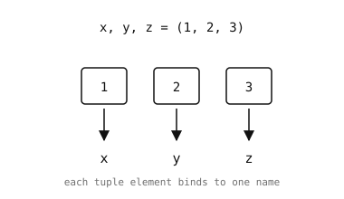

2.8. טאפלים¶
טאפל הוא רצף ערכים מסודר ובלתי-משתנה. לאחר היצירה, לא ניתן להוסיף, להסיר או לשנות את הפריטים שבתוכו.
2.8.1. יצירת טאפלים¶
השתמשו בסוגריים (או רק בפסיקים) כדי ליצור טאפל:
empty = ()
point = (3, 4)
triple = 1, 2, 3 # parentheses are optional
mixed = (1, "two", 3.14)
nested = ((1, 2), (3, 4))
2.8.1.1. מלכודת האיבר היחיד¶
סוגריים סביב ערך הם רק סוגריים; מה שבאמת יוצר טאפל הוא הפסיק. טאפל בן איבר אחד זקוק לפסיק נגרר:
>>> (1)
1 # just an int in parens
>>> (1,)
(1,) # a one-element tuple
>>> type((1)), type((1,))
(<class 'int'>, <class 'tuple'>)
2.8.2. אורך, אינדוקס וחיתוך¶
זהה לרשימות ולמחרוזות – len(), אינדוקס, חיתוך, in, ו-+ / * כולם פועלים באותו אופן:
>>> point = (3, 4, 5)
>>> len(point)
3
>>> point[0]
3
>>> point[1:]
(4, 5)
>>> 4 in point
True
>>> (1, 2) + (3, 4)
(1, 2, 3, 4)
2.8.3. בלתי-משתנות¶
לטאפלים אין append, pop, sort, או כל מתודה אחרת במקום. השמה לפי אינדקס גורמת ל-TypeError:
>>> point = (3, 4)
>>> point[0] = 99
Traceback (most recent call last):
File "<stdin>", line 1, in <module>
TypeError: 'tuple' object doesn't support item assignment
כדי ”לשנות“ טאפל, בנו טאפל חדש עם הערכים המעודכנים.
2.8.4. פריקה¶
כוח העל העיקרי של טאפל הוא פריקה: השמת כל פריט למשתנה נפרד בהוראה אחת.

פריקה קושרת כל איבר של טאפל למשתנה בשם בהשמה אחת.¶
>>> point = (3, 4)
>>> x, y = point
>>> x
3
>>> y
4
הצד הימני יכול להיות כל איטרבל – רשימה, מחרוזת, ערך מוחזר של פונקציה:
>>> a, b, c = "abc"
>>> a, b, c
('a', 'b', 'c')
* מוביל אוסף את ”השאר“ של הפריקה לתוך רשימה:
>>> first, *rest = [10, 20, 30, 40]
>>> first
10
>>> rest
[20, 30, 40]
2.8.5. ערכים מוחזרים מרובים¶
פונקציה יכולה להחזיר טאפל כדי לספק כמה ערכים בבת אחת; הקורא פורק אותם בדרך פנימה:
def size_of(rect):
return (rect[2] - rect[0], rect[3] - rect[1])
width, height = size_of((10, 20, 110, 140))
# width = 100, height = 120
הסוגריים על ה-return אופציונליים – return a, b חשוף הוא גם טאפל.
2.8.6. טאפל לעומת רשימה¶
מדריך מעשי לבחירה במה להשתמש:
טאפל עבור נתונים בעלי צורה קבועה, לעיתים קרובות הטרוגניים: נקודות
(x, y), צבעי(r, g, b), ערכים מוחזרים מרובים, ארגומנטים של פונקציה ארוזים לשימוש מאוחר.רשימה עבור נתונים באורך משתנה, לעיתים קרובות הומוגניים: רשימת מדידות, תור של פריטים לעיבוד, כל דבר שאתם מצפים להוסיף אליו.
טאפלים הם גם ניתנים לגיבוב (hashable) (כל עוד כל איבר בתוכם ניתן לגיבוב), ולכן ניתן להשתמש בהם כמפתחות ב-dict.